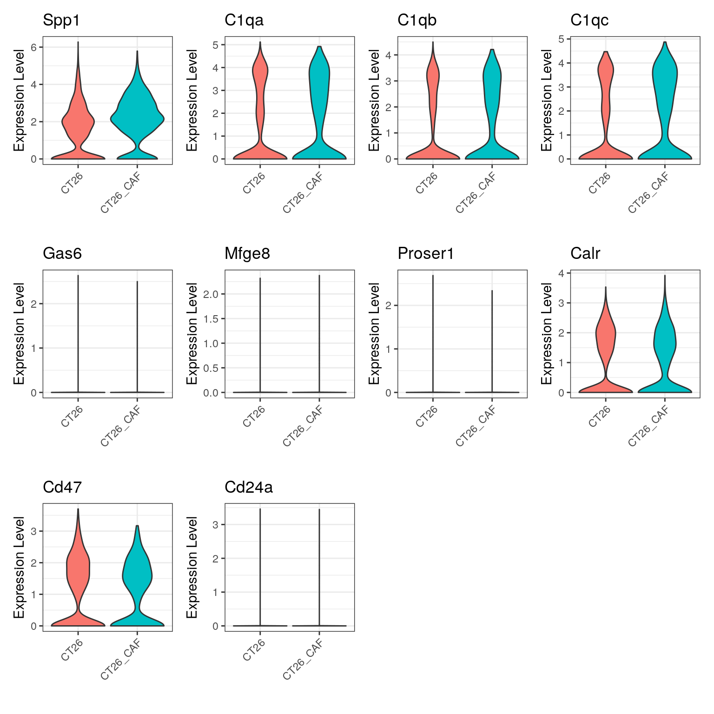
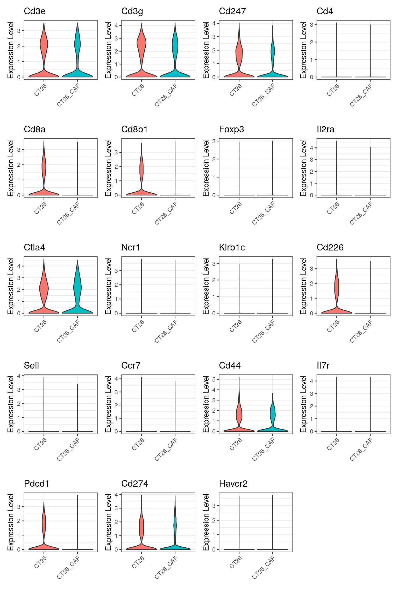
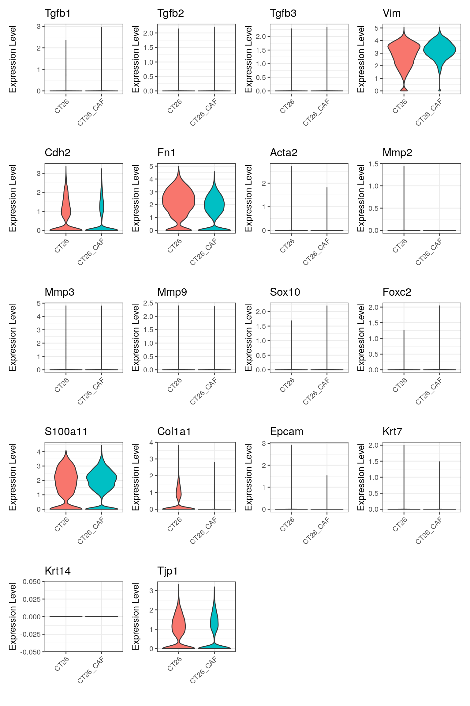
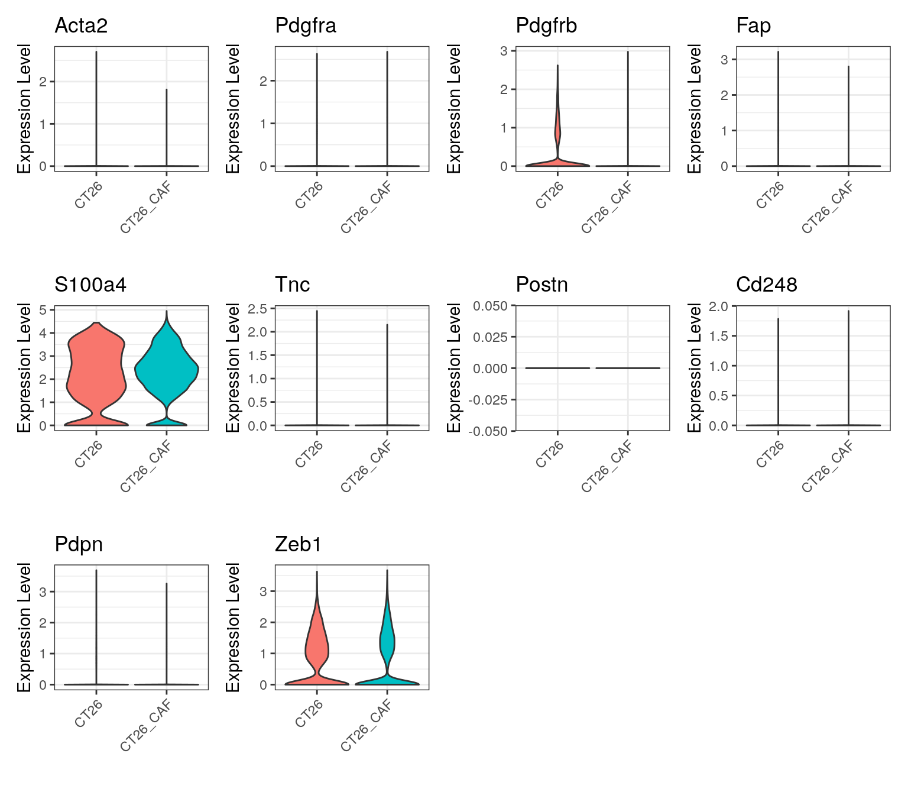

Integration, annotation, and comparative analysis of PDX CAF scRNAseq data
heinin
2026-01-31
Last updated: 2026-03-03
Checks: 5 2
Knit directory: PIPAC_spatial/
This reproducible R Markdown analysis was created with workflowr (version 1.7.1). The Checks tab describes the reproducibility checks that were applied when the results were created. The Past versions tab lists the development history.
The R Markdown file has unstaged changes. To know which version of
the R Markdown file created these results, you’ll want to first commit
it to the Git repo. If you’re still working on the analysis, you can
ignore this warning. When you’re finished, you can run
wflow_publish to commit the R Markdown file and build the
HTML.
Great job! The global environment was empty. Objects defined in the global environment can affect the analysis in your R Markdown file in unknown ways. For reproduciblity it’s best to always run the code in an empty environment.
The command set.seed(20240917) was run prior to running
the code in the R Markdown file. Setting a seed ensures that any results
that rely on randomness, e.g. subsampling or permutations, are
reproducible.
Great job! Recording the operating system, R version, and package versions is critical for reproducibility.
Nice! There were no cached chunks for this analysis, so you can be confident that you successfully produced the results during this run.
Using absolute paths to the files within your workflowr project makes it difficult for you and others to run your code on a different machine. Change the absolute path(s) below to the suggested relative path(s) to make your code more reproducible.
| absolute | relative |
|---|---|
| /home/hnatri/PIPAC_spatial/ | . |
| /home/hnatri/PIPAC_spatial/code/PIPAC_colors_themes.R | code/PIPAC_colors_themes.R |
| /home/hnatri/PIPAC_spatial/code/plot_functions.R | code/plot_functions.R |
| /home/hnatri/PIPAC_spatial/PDX_CAF_cluster_markers.tsv | PDX_CAF_cluster_markers.tsv |
| /home/hnatri/PIPAC_spatial/CT26_CAF_celltypeprops.pdf | CT26_CAF_celltypeprops.pdf |
| /home/hnatri/PIPAC_spatial/CT26_CAF_pathways.pdf | CT26_CAF_pathways.pdf |
| /home/hnatri/PIPAC_spatial/CT26_CAF_UMAP.pdf | CT26_CAF_UMAP.pdf |
| /home/hnatri/PIPAC_spatial/CT26_CAF_UMAP_sample.pdf | CT26_CAF_UMAP_sample.pdf |
Great! You are using Git for version control. Tracking code development and connecting the code version to the results is critical for reproducibility.
The results in this page were generated with repository version 2f096d7. See the Past versions tab to see a history of the changes made to the R Markdown and HTML files.
Note that you need to be careful to ensure that all relevant files for
the analysis have been committed to Git prior to generating the results
(you can use wflow_publish or
wflow_git_commit). workflowr only checks the R Markdown
file, but you know if there are other scripts or data files that it
depends on. Below is the status of the Git repository when the results
were generated:
Ignored files:
Ignored: PDX_CAF_cluster_markers.tsv
Ignored: PDX_CAF_nonimmune_cluster_markers.tsv
Ignored: cell_annotation_final_topmarkers.tsv
Ignored: cell_immune_cluster_marker_annotations.tsv
Ignored: cell_nonimmune_cluster_marker_annotations.tsv
Ignored: celltype_markers.tsv
Ignored: code/.RData
Ignored: code/.Rapp.history
Ignored: code/.Rhistory
Ignored: code/Proximity_analysis/.DS_Store
Ignored: code/Proximity_analysis/data/
Ignored: code/Proximity_analysis/output/
Ignored: code/RSC_latest_EDM_2025-08-06/
Ignored: code/celltype_proximity_tumor.Rout
Ignored: code/scGSEA_CAFs.Rout
Ignored: code/update_metadata.Rout
Ignored: immune_cluster_marker_annotations_2ndpass.tsv
Ignored: immune_prelim_annot_topmarkers.tsv
Ignored: nonimmune_cluster_marker_annotations_2ndpass.tsv
Ignored: nonimmune_prelim_annot_topmarkers.tsv
Ignored: output/proximity_compiled.tsv
Ignored: output/tumor_proximity_compiled.tsv
Ignored: tumor_posttreatment_proximity_compiled.tsv
Ignored: tumor_pretreatment_proximity_compiled.tsv
Ignored: tumor_proximity_compiled.tsv
Unstaged changes:
Modified: analysis/PDX_CAF_scRNAseq_analysis.Rmd
Modified: analysis/arm3_comparative_analysis.Rmd
Note that any generated files, e.g. HTML, png, CSS, etc., are not included in this status report because it is ok for generated content to have uncommitted changes.
These are the previous versions of the repository in which changes were
made to the R Markdown
(analysis/PDX_CAF_scRNAseq_analysis.Rmd) and HTML
(docs/PDX_CAF_scRNAseq_analysis.html) files. If you’ve
configured a remote Git repository (see ?wflow_git_remote),
click on the hyperlinks in the table below to view the files as they
were in that past version.
| File | Version | Author | Date | Message |
|---|---|---|---|---|
| Rmd | 2f096d7 | heinin | 2026-03-03 | Updated PDX CAF analysis and index |
| html | 2f096d7 | heinin | 2026-03-03 | Updated PDX CAF analysis and index |
| Rmd | ff362c6 | heinin | 2026-02-27 | Updated PDX educated CAF sc analysis |
| html | ff362c6 | heinin | 2026-02-27 | Updated PDX educated CAF sc analysis |
| Rmd | cab1750 | heinin | 2026-02-11 | Updated annotation and Freeze version of data. Added PDX CAF analysis and Xenium fibroblast analysis |
| html | cab1750 | heinin | 2026-02-11 | Updated annotation and Freeze version of data. Added PDX CAF analysis and Xenium fibroblast analysis |
Libraries and environment variables
library(workflowr)
library(Seurat)
library(googlesheets4)
library(tidyverse)
library(plyr)
library(SoupX)
library(scProportionTest)
library(clusterProfiler)
library(org.Hs.eg.db)
library(org.Mm.eg.db)
library(biomaRt)
library(gprofiler2)
setwd("/home/hnatri/PIPAC_spatial/")
set.seed(1234)
options(future.globals.maxSize = 30000 * 1024^2)
reduction <- "umap"
source("/home/hnatri/SingleCellBestPractices/scripts/preprocessing_qc_module.R")
source("/home/hnatri/SingleCellBestPractices/scripts/integration_module.R")
source("/home/hnatri/Utilities/utilities.R")
source("/home/hnatri/PIPAC_spatial/code/PIPAC_colors_themes.R")
source("/home/hnatri/PIPAC_spatial/code/plot_functions.R")
# Markers
main_plot_features <- c("PTPRC", "CD3D", "CD3E", "CD4", "CD8A", "JAK1", "JAK2", "STAT4", "STAT3", "TIGIT", "GZMB", "SELL", "CD19", "CD68", "CD44", "MARCO", "APOE", "C1QB", "C1QBP", "CD163", "SPP1", "VCAN", "MUC5AC", "NOTCH3", "RGS5", "MS4A1", "PGA5", "PLVAP", "CCL21", "LYVE", "SPARCL1", "FN1", "DCN", "LUM", "COL1A2", "PDPN", "ACTA2", "LMNA", "EGR3", "TP53", "JUN", "FOS", "BRAF", "KIT", "SOX9", "RNF43", "EPCAM", "PECAM", "CEACAM", "TGFB1", "JUNB", "TCF7", "GZMA", "GZMK", "CD47", "CD74", "LYZ", "TREM2", "CD247", "COL5A1", "SPARC", "CD36", "CTLA4", "RGS1", "CCL2", "SELENOP", "LYVE1", "CTSD", "MMP9", "CDK1", "FLT1", "RAMP2", "CCL14", "MCAM", "NRP1", "CEACAM6", "IL32", "TGFBI", "VEGFA", "LAMP1", "IGFBP7", "POSTN", "C1S", "C1R", "CSF1", "NOTCH1", "FOXP3", "IL2RB", "TUBA1B", "S100A9", "C3", "CXCR2", "SDC1", "CD38", "IGHG1", "PRDX4", "ICAM1", "GATA2", "CXCL3")
mycafs <- c("TGFB1", "ACTA2", "TAGLN") #"HOPX", "MYL9"
icafs <- c("IL6", "CXCL12", "CXCL14") #"CXCL13",
abcafs <- c("CD74", "HLA-DPB1", "HLA-DPB2", "HLA-DQA1", "HLA-DRA", "HLA-DRB1")
ficafs <- c("SFRP2", "SFRP4", "COMP", "CXCL14", "PLA2G2A", "ASPN")
main_plot_features <- c(main_plot_features, mycafs, icafs, abcafs, ficafs)
main_plot_features <- unique(main_plot_features)
main_plot_features <- gorth(main_plot_features, source_organism = "hsapiens", target_organism = "mmusculus")$ortholog_nameImport data
seurat_data <- readRDS("/scratch/hnatri/PIPAC/PDX_CAF_Seurat_filtered.rds")
table(seurat_data$Sample)Integration
DefaultAssay(seurat_data) <- "RNA"
seurat_data <- SCTransform(seurat_data,
vars.to.regress = c("percent.mt_RNA", "nCount_RNA", "nFeature_RNA"),
verbose = F)
s.genes <- cc.genes.updated.2019$s.genes
g2m.genes <- cc.genes.updated.2019$g2m.genes
mmus_s <- gorth(s.genes, source_organism = "hsapiens", target_organism = "mmusculus")$ortholog_name
mmus_g2m <- gorth(g2m.genes, source_organism = "hsapiens", target_organism = "mmusculus")$ortholog_name
seurat_data <- CellCycleScoring(seurat_data,
s.features = mmus_s,
g2m.features = mmus_g2m,
set.ident = F,
verbose = F)
seurat_data <- SCTransform(seurat_data,
vars.to.regress = c("S.Score", "G2M.Score", "Phase"),
verbose = F)
seurat_data <- RunPCA(seurat_data, assay = "SCT",
verbose = F)
seurat_integrated <- IntegrateLayers(object = seurat_data,
method = HarmonyIntegration,
orig.reduction = "pca",
new.reduction = 'harmony',
normalization.method = "SCT",
k.weight = 20,
verbose = FALSE)
#saveRDS(seurat_integrated, "/scratch/hnatri/PIPAC/PDX_CAF_Seurat_integrated.rds")Dimensionality reduction and clustering
seurat_integrated <- readRDS("/scratch/hnatri/PIPAC/PDX_CAF_Seurat_integrated.rds")
seurat_integrated <- SCTransform(seurat_integrated,
vars.to.regress = c("S.Score", "G2M.Score", "Phase"),
verbose = F)
seurat_integrated <- RunPCA(seurat_integrated,
assay = "SCT",
verbose = F)
umap_pcs <- get_pcs(seurat_integrated, reduction_name = "pca")
seurat_integrated <- RunUMAP(object = seurat_integrated,
assay = "SCT",
reduction = "harmony",
reduction.name = "harmony_umap",
reduction.key = "harmony_umap_",
dims = 1:min(umap_pcs),
return.model = TRUE,
verbose = F)
seurat_integrated <- FindNeighbors(object = seurat_integrated,
assay = "SCT",
reduction = "harmony",
dims = 1:min(umap_pcs),
graph.name = c("harmony_nn",
"harmony_snn"),
verbose = F)
seurat_integrated <- FindClusters(object = seurat_integrated,
resolution = c(0.1,0.2,0.3,0.5,0.8,1),
graph.name = "harmony_snn",
verbose = F)
DimPlot(seurat_integrated,
group.by = "harmony_snn_res.0.8",
reduction = "harmony_umap",
label = T) +
coord_fixed(ratio = 1) +
theme_bw() +
NoLegend()
table(seurat_integrated$harmony_snn_res.0.8)
#saveRDS(seurat_integrated, "/scratch/hnatri/PIPAC/PDX_CAF_Seurat_integrated.rds")Annotation
SoupX RNA
DefaultAssay(seurat_integrated) <- "SoupX_RNA"
seurat_integrated <- JoinLayers(seurat_integrated)
seurat_integrated <- NormalizeData(seurat_integrated)
FeaturePlot(seurat_integrated,
features = sort(main_plot_features),
cols = c("gray98", "tomato3"),
reduction = "harmony_umap",
raster = T,
order = T,
ncol = 5) &
coord_fixed(ratio = 1) &
theme_bw() &
NoLegend()RNA
seurat_integrated <- readRDS("/scratch/hnatri/PIPAC/PDX_CAF_Seurat_integrated.rds")
DefaultAssay(seurat_integrated) <- "RNA"
seurat_integrated <- JoinLayers(seurat_integrated)
seurat_integrated <- NormalizeData(seurat_integrated)
DimPlot(seurat_integrated,
group.by = "harmony_snn_res.0.8",
reduction = "harmony_umap",
label = T) +
coord_fixed(ratio = 1) +
theme_bw() +
NoLegend()
| Version | Author | Date |
|---|---|---|
| cab1750 | heinin | 2026-02-11 |
table(seurat_integrated$harmony_snn_res.0.8)
0 1 2 3 4 5 6 7 8 9 10 11 12 13 14 15
4752 4257 3445 3212 3056 2922 2903 2891 2563 1783 1712 1690 1587 1448 1358 1353
16 17 18 19 20 21 22 23 24
1208 927 740 638 615 206 196 141 80 FeaturePlot(seurat_integrated,
features = sort(main_plot_features),
cols = c("gray98", "tomato3"),
reduction = "harmony_umap",
raster = T,
order = T,
ncol = 5) &
coord_fixed(ratio = 1) &
theme_bw() &
NoLegend()
| Version | Author | Date |
|---|---|---|
| cab1750 | heinin | 2026-02-11 |
mini_features <- gorth(c("CD3E", "CD8", "SPP1", "CD68",
"FN", "COL1A1", "EPCAM"), source_organism = "hsapiens", target_organism = "mmusculus")$ortholog_name
FeaturePlot(seurat_integrated,
features = mini_features,
cols = c("gray98", "tomato3"),
reduction = "harmony_umap",
raster = T,
order = T,
ncol = 3) &
coord_fixed(ratio = 1) &
theme_bw() &
NoLegend()
| Version | Author | Date |
|---|---|---|
| cab1750 | heinin | 2026-02-11 |
clusters <- as.factor(sort(unique(seurat_integrated$harmony_snn_res.0.8)))
cluster_col <- colorRampPalette(brewer.pal(10, "Paired"))(nb.cols <- length(clusters))
names(cluster_col) <- levels(clusters)
create_dotplot_heatmap(seurat_object = seurat_integrated,
plot_features = sort(main_plot_features),
group_var = "harmony_snn_res.0.8",
group_colors = cluster_col,
column_title = "",
row_km = 5,
col_km = 5,
row.order = NULL,
col.order = NULL)
| Version | Author | Date |
|---|---|---|
| cab1750 | heinin | 2026-02-11 |
Top cluster markers
Idents(seurat_integrated) <- seurat_integrated$harmony_snn_res.0.8
cluster_markers <- FindAllMarkers(seurat_integrated,
return.thresh = 0.01,
logfc.threshold = 0.5,
min.pct = 0.20,
verbose = F)
table(cluster_markers$cluster)
0 1 2 3 4 5 6 7 8 9 10 11 12 13 14 15
774 2867 2062 1639 2206 1180 2060 2258 3884 3150 3410 3312 2812 2809 2878 4178
16 17 18 19 20 21 22 23 24
1545 2774 3931 1159 2560 3405 3132 2347 3560 top_cluster_markers <- cluster_markers %>%
arrange(dplyr::desc(avg_log2FC)) %>%
group_by(cluster) %>%
dplyr::slice(1:10)
top_cluster_markers_save <- cluster_markers %>%
arrange(dplyr::desc(avg_log2FC)) %>%
group_by(cluster) %>%
dplyr::slice(1:30)
#write.table(top_cluster_markers_save, "/home/hnatri/PIPAC_spatial/PDX_CAF_cluster_markers.tsv",
# quote = F, sep = "\t")create_dotplot_heatmap(seurat_object = seurat_integrated,
plot_features = unique(top_cluster_markers$gene),
group_var = "harmony_snn_res.0.8",
group_colors = cluster_col,
column_title = "",
row_km = 5,
col_km = 5,
row.order = NULL,
col.order = NULL)
FeaturePlot(seurat_integrated,
features = unique(top_cluster_markers$gene),
cols = c("gray98", "tomato3"),
reduction = "harmony_umap",
raster = T,
order = T,
ncol = 8) &
coord_fixed(ratio = 1) &
theme_bw() &
NoLegend()
# Annotation df
# Non-immune c(0, 1, 2, 3, 4, 5, 6, 7, 8, 9, 14, 15, 16, 18, 19)
annotations <- data.frame("cluster" = c(0, seq(1, 24)),
"annotation" = c("Tumor1", # 0
"Proliferating1",
"Tumor2",
"CAF1", # 3
"Tumor3", # 4
"CAF2",
"Proliferating2",
"Tumor4",
"CAF3", #8
"CAF4",
"Myeloid1",
"Myeloid2",
"Lymphoid1", # 12
"Lymphoid2",
"CAF5",
"CAF6", # 15
"CAF7",
"Immune_Unclassified1",
"Tumor5",
"Proliferating3",
"Immune_Unclassified2",
"Immune_Unclassified3",
"Immune_Unclassified4",
"Immune_Unclassified5",
"Immune_Unclassified6"))
seurat_integrated$Annotation <- mapvalues(seurat_integrated$harmony_snn_res.0.8,
from = annotations$cluster,
to = annotations$annotation)
seurat_integrated$Annotation <- factor(seurat_integrated$Annotation,
levels = sort(unique(as.character(seurat_integrated$Annotation))))
# Updating annotations
seurat_integrated$Updated_Annotation <- seurat_integrated$Annotation
seurat_integrated$Updated_Annotation <- gsub("Immune_Unclassified1", "Lymphoid3", seurat_integrated$Updated_Annotation)
seurat_integrated$Updated_Annotation <- gsub("Immune_Unclassified2", "Lymphoid4", seurat_integrated$Updated_Annotation)
seurat_integrated$Updated_Annotation <- gsub("Immune_Unclassified6", "Lymphoid5", seurat_integrated$Updated_Annotation)
seurat_integrated$Updated_Annotation <- gsub("Immune_Unclassified3", "Myeloid3", seurat_integrated$Updated_Annotation)
seurat_integrated$Updated_Annotation <- gsub("Immune_Unclassified4", "Myeloid4", seurat_integrated$Updated_Annotation)
seurat_integrated$Updated_Annotation <- gsub("Immune_Unclassified5", "Unclassified", seurat_integrated$Updated_Annotation)
seurat_integrated$Updated_Annotation <- factor(seurat_integrated$Updated_Annotation,
levels = sort(unique(as.character(seurat_integrated$Updated_Annotation))))
table(seurat_integrated$Updated_Annotation)
CAF1 CAF2 CAF3 CAF4 CAF5
3212 2922 2563 1783 1358
CAF6 CAF7 Lymphoid1 Lymphoid2 Lymphoid3
1353 1208 1587 1448 927
Lymphoid4 Lymphoid5 Myeloid1 Myeloid2 Myeloid3
615 80 1712 1690 206
Myeloid4 Proliferating1 Proliferating2 Proliferating3 Tumor1
196 4257 2903 638 4752
Tumor2 Tumor3 Tumor4 Tumor5 Unclassified
3445 3056 2891 740 141 cts <- as.factor(sort(unique(as.character(seurat_integrated$Updated_Annotation))))
ct_col <- colorRampPalette(brewer.pal(10, "Paired"))(nb.cols <- length(cts))
names(ct_col) <- levels(cts)
DimPlot(seurat_integrated,
group.by = "Updated_Annotation",
reduction = "harmony_umap",
cols = ct_col,
label = T,
label.box = T,
repel = T) +
coord_fixed(ratio = 1) +
theme_bw() +
NoLegend()
create_dotplot_heatmap(seurat_object = seurat_integrated,
plot_features = unique(top_cluster_markers$gene),
group_var = "Updated_Annotation",
group_colors = ct_col,
column_title = "",
row_km = 5,
col_km = 5,
row.order = NULL,
col.order = NULL)
Comparative analysis
Cell type proportions
table(seurat_integrated$Sample)
CT26 CT26_CAF
19928 25755 table(seurat_integrated$Sample, seurat_integrated$Updated_Annotation)
CAF1 CAF2 CAF3 CAF4 CAF5 CAF6 CAF7 Lymphoid1 Lymphoid2 Lymphoid3
CT26 1076 874 884 444 275 445 486 1077 777 714
CT26_CAF 2136 2048 1679 1339 1083 908 722 510 671 213
Lymphoid4 Lymphoid5 Myeloid1 Myeloid2 Myeloid3 Myeloid4
CT26 337 58 1168 1184 113 177
CT26_CAF 278 22 544 506 93 19
Proliferating1 Proliferating2 Proliferating3 Tumor1 Tumor2 Tumor3
CT26 2451 1548 390 1712 1150 1179
CT26_CAF 1806 1355 248 3040 2295 1877
Tumor4 Tumor5 Unclassified
CT26 1093 223 93
CT26_CAF 1798 517 48create_barplot(seurat_integrated,
group_var = "Sample",
plot_var = "Updated_Annotation",
plot_levels = sort(unique(as.character(seurat_integrated$Updated_Annotation))),
group_levels = sort(unique(seurat_integrated$Sample)),
plot_colors = ct_col,
var_names = c("Frequency (%)", ""),
legend_title = "Celltype")
prop_test <- sc_utils(seurat_integrated)
prop_test <- permutation_test(
prop_test, cluster_identity = "Updated_Annotation",
sample_1 = "CT26", sample_2 = "CT26_CAF",
sample_identity = "Sample")
permutation_plot(prop_test) +
ggtitle("CT26 vs. CT26+CAF")
#filename <- "/home/hnatri/PIPAC_spatial/CT26_CAF_celltypeprops.pdf"
#
#pdf(file=filename,
# width = 5.5,
# height = 6)
#
#permutation_plot(prop_test) +
# ggtitle("CT26 vs. CT26+CAF")
#
#dev.off()DEGs, CAFs only
#tumor_DEGs <- get_DEGs(seuratdata = seurat_integrated,
# celltypes = unique(seurat_integrated$harmony_snn_res.0.8),
# groupvar = "PrePost",
# group1 = "Treated",
# group2 = "Baseline")
#tumor_only <- subset(seurat_integrated, subset = harmony_snn_res.0.8 %in% c(0, 2, 4, 7, 18, 21,
# 16, 5, 9, 8, 14, 15, 3,
# 19, 1, 6))
#tumor_only <- c("CAF1", "CAF2", "CAF3", "CAF4", "CAF5", "CAF6", "CAF7",
# "Proliferating1", "Proliferating2", "Proliferating3",
# "Tumor1", "Tumor2", "Tumor3", "Tumor4", "Tumor5")
caf_only <- c("CAF1", "CAF2", "CAF3", "CAF4", "CAF5", "CAF6", "CAF7")
caf_only <- subset(seurat_integrated, subset = Updated_Annotation %in% caf_only)
DefaultAssay(caf_only) <- "RNA"
caf_only <- JoinLayers(caf_only)
caf_only <- NormalizeData(caf_only)
Idents(caf_only) <- caf_only$Sample
caf_DEGs <- FindMarkers(caf_only,
ident.1 = "CT26_CAF",
ident.2 = "CT26")
# Distribution of p-values and log2FC
hist(caf_DEGs$p_val)
| Version | Author | Date |
|---|---|---|
| ff362c6 | heinin | 2026-02-27 |
hist(caf_DEGs$p_val_adj)
| Version | Author | Date |
|---|---|---|
| ff362c6 | heinin | 2026-02-27 |
hist(caf_DEGs$avg_log2FC)
ensembl <- useMart("ensembl", dataset="mmusculus_gene_ensembl")
geneinfo <- getBM(attributes=c("mgi_symbol", "ensembl_gene_id"),
filters = 'mgi_symbol',
values = rownames(caf_DEGs),
mart = ensembl)
caf_DEGs$gene_id <- mapvalues(rownames(caf_DEGs),
from = geneinfo$mgi_symbol,
to = geneinfo$ensembl_gene_id)
caf_DEGs_sig <- caf_DEGs %>%
filter(p_val_adj < 0.01,
abs(avg_log2FC) > 1,
(pct.1 > 0.2 | pct.2 > 0.2))
caf_DEGs_sig %>%
filter(avg_log2FC>0) %>% rownames() %>% length()[1] 71caf_DEGs_sig %>%
filter(avg_log2FC<0) %>% rownames() %>% length()[1] 70Some features upregulated in CT26+CAF
caf_DEGs_sig %>%
filter(avg_log2FC>0) %>%
arrange(desc(avg_log2FC)) %>%
head(20) p_val avg_log2FC pct.1 pct.2 p_val_adj gene_id
Tsc22d3 0.000000e+00 3.565354 0.664 0.180 0.000000e+00 ENSMUSG00000031431
Mertk 1.814855e-169 3.301561 0.219 0.038 6.115335e-165 ENSMUSG00000014361
Fkbp5 0.000000e+00 3.211723 0.938 0.517 0.000000e+00 ENSMUSG00000024222
Ddit4 7.280026e-157 3.033065 0.229 0.052 2.453077e-152 ENSMUSG00000020108
Ccn2 3.760267e-221 2.780631 0.339 0.100 1.267060e-216 ENSMUSG00000019997
Ampd3 5.251620e-228 2.704154 0.345 0.101 1.769586e-223 ENSMUSG00000005686
Clca3a1 0.000000e+00 2.636316 0.709 0.397 0.000000e+00 ENSMUSG00000056025
Cebpd 0.000000e+00 2.521103 0.561 0.235 0.000000e+00 ENSMUSG00000071637
Spsb1 4.578352e-151 2.456031 0.275 0.092 1.542722e-146 ENSMUSG00000039911
Mt2 0.000000e+00 2.409798 0.959 0.616 0.000000e+00 ENSMUSG00000031762
Cblb 0.000000e+00 2.387812 0.718 0.335 0.000000e+00 ENSMUSG00000022637
Mt1 0.000000e+00 2.312234 0.967 0.635 0.000000e+00 ENSMUSG00000031765
Ccnd3 0.000000e+00 2.290441 0.740 0.363 0.000000e+00 ENSMUSG00000034165
Sorbs1 0.000000e+00 2.246173 0.773 0.440 0.000000e+00 ENSMUSG00000025006
Bcl2l1 0.000000e+00 2.047985 0.627 0.335 0.000000e+00 ENSMUSG00000007659
Krt20 5.712029e-160 2.025973 0.372 0.175 1.924725e-155 ENSMUSG00000035775
Slc22a23 4.682959e-99 1.993746 0.262 0.117 1.577970e-94 ENSMUSG00000038267
Lgalsl 8.147928e-80 1.827397 0.248 0.125 2.745526e-75 ENSMUSG00000042363
Stk38 0.000000e+00 1.780421 0.628 0.402 0.000000e+00 ENSMUSG00000024006
F3 2.523582e-61 1.726319 0.208 0.104 8.503462e-57 ENSMUSG00000028128upreg <- caf_DEGs_sig %>%
filter(avg_log2FC>0) %>%
arrange(desc(avg_log2FC)) %>%
rownames()
VlnPlot(caf_only,
group.by = "Sample",
features = head(upreg, n = 12),
pt.size = 0,
ncol = 4) &
theme_bw() &
NoLegend() &
RotatedAxis() &
xlab("")
Some features downregulated in CT26+CAF
caf_DEGs_sig %>%
filter(avg_log2FC<0) %>%
arrange(desc(avg_log2FC)) %>%
tail(20) p_val avg_log2FC pct.1 pct.2 p_val_adj gene_id
Bdkrb2 5.879550e-141 -1.285929 0.088 0.248 1.981173e-136 ENSMUSG00000021070
Slc5a3 4.715134e-200 -1.307268 0.142 0.373 1.588812e-195 ENSMUSG00000089774
Cd274 2.125190e-119 -1.310612 0.079 0.220 7.161042e-115 ENSMUSG00000016496
Slc22a4 3.160641e-133 -1.330601 0.100 0.261 1.065010e-128 ENSMUSG00000020334
Cd44 0.000000e+00 -1.331617 0.599 0.886 0.000000e+00 ENSMUSG00000005087
Gbp4 1.653546e-189 -1.357082 0.141 0.362 5.571789e-185 ENSMUSG00000079363
Sgms2 0.000000e+00 -1.377115 0.288 0.621 0.000000e+00 ENSMUSG00000050931
Gja1 7.112647e-244 -1.406842 0.166 0.431 2.396678e-239 ENSMUSG00000050953
Gbp6 1.747525e-156 -1.409594 0.101 0.280 5.888461e-152 ENSMUSG00000104713
Gvin2 1.007901e-151 -1.448841 0.063 0.214 3.396225e-147 ENSMUSG00000078606
Cmss1 0.000000e+00 -1.489307 0.928 0.999 0.000000e+00 ENSMUSG00000022748
Dkk2 1.227922e-192 -1.506833 0.134 0.351 4.137605e-188 ENSMUSG00000028031
Slit2 0.000000e+00 -1.609899 0.890 0.991 0.000000e+00 ENSMUSG00000031558
Ern1 0.000000e+00 -1.614260 0.412 0.785 0.000000e+00 ENSMUSG00000020715
Sell 5.930203e-265 -1.724594 0.114 0.363 1.998241e-260 ENSMUSG00000026581
Camk1d 0.000000e+00 -1.735623 0.472 0.907 0.000000e+00 ENSMUSG00000039145
Mtcl1 5.751751e-197 -1.774773 0.067 0.248 1.938110e-192 ENSMUSG00000052105
Gm19951 1.252772e-257 -1.829014 0.085 0.315 4.221340e-253 ENSMUSG00000113136
Lars2 0.000000e+00 -1.848695 0.476 0.893 0.000000e+00 ENSMUSG00000035202
Gpr39 0.000000e+00 -2.354994 0.069 0.320 0.000000e+00 ENSMUSG00000026343downreg <- caf_DEGs_sig %>%
filter(avg_log2FC<0) %>%
arrange(desc(avg_log2FC)) %>%
rownames()
VlnPlot(caf_only,
group.by = "Sample",
features = tail(downreg, n = 12),
pt.size = 0,
ncol = 4) &
theme_bw() &
NoLegend() &
RotatedAxis() &
xlab("")
Pathway enrichment, upregulated in CT26+CAF
caf_DEGs_up <- caf_DEGs_sig %>%
filter(avg_log2FC>0)
gse_res <- enrichGO(rownames(caf_DEGs_up),
ont ="BP",
keyType = "SYMBOL",
OrgDb = org.Mm.eg.db,
minGSSize = 3,
maxGSSize = 1000,
pvalueCutoff = 0.01,
qvalueCutoff = 1,
universe = rownames(caf_DEGs),
pAdjustMethod = "none")
ddp <- dotplot(gse_res, showCategory=10, font.size=10, color="pvalue") +
theme(legend.text=element_text(size=5),
legend.position = "top",
legend.box = "vertical",
text = element_text(size=6))
dim(gse_res)[1] 94 9ddp
#filename <- "/home/hnatri/PIPAC_spatial/CT26_CAF_pathways.pdf"
#
#pdf(file=filename,
# width = 4.5,
# height = 6)
#
#ddp
#
#dev.off()Pathway enrichment, downregulated in CT26+CAF
caf_DEGs_down <- caf_DEGs_sig %>%
filter(avg_log2FC<0)
gse_res <- enrichGO(rownames(caf_DEGs_down),
ont ="BP",
keyType = "SYMBOL",
OrgDb = org.Mm.eg.db,
minGSSize = 3,
maxGSSize = 1000,
pvalueCutoff = 0.01,
qvalueCutoff = 1,
universe = rownames(caf_DEGs),
pAdjustMethod = "none")
ddp <- dotplot(gse_res, showCategory=10, font.size=10, color="pvalue") +
theme(legend.text=element_text(size=5),
legend.position = "top",
legend.box = "vertical",
text = element_text(size=6))
dim(gse_res)[1] 298 9ddp
#filename <- "/home/hnatri/PIPAC_spatial/CT26_CAF_pathways.pdf"
#
#pdf(file=filename,
# width = 4.5,
# height = 6)
#
#ddp
#
#dev.off()filename <- "/home/hnatri/PIPAC_spatial/CT26_CAF_UMAP.pdf"
pdf(file=filename,
width = 8,
height = 5)
DimPlot(seurat_integrated,
group.by = "Annotation",
reduction = "harmony_umap",
cols = ct_col,
label = T,
label.box = T,
repel = T) +
coord_fixed(ratio = 1) +
theme_bw()
dev.off()
filename <- "/home/hnatri/PIPAC_spatial/CT26_CAF_UMAP_sample.pdf"
pdf(file=filename,
width = 9,
height = 4)
DimPlot(seurat_integrated,
group.by = "Annotation",
split.by = "Sample",
reduction = "harmony_umap",
cols = ct_col,
label = F) +
coord_fixed(ratio = 1) +
theme_bw() +
NoLegend()
dev.off()Myeloid markers
Key Mouse MDSC Markers and Subsets
- Pan-MDSC: CD11b+, Gr-1+
- PMN-MDSC (Granulocytic): CD11b+ Ly6G+ Ly6Clow, CD244+, Arg2, Stat3,
Jaml.
- M-MDSC (Monocytic): CD11b+ Ly6G− Ly6Chigh, CCR2+, Arg1, Csf1r.
- Functional Genes: Arg1 (Arginase-1), Nos2 (iNOS), S100a8, S100a9, ROS.
m2 <- c("CD11b", "Gr-1", "Ly6G", "Ly6C", "CD244", "Arg2", "Stat3", "Jaml",
"CCR2", "Arg1", "Csf1r", "Nos2", "S100a8", "S100a9", "ROS")
VlnPlot(seurat_integrated,
group.by = "Updated_Annotation",
features = m2,
pt.size = 0,
ncol = 2) &
theme_bw() &
NoLegend() &
RotatedAxis() &
xlab("")
Key Mouse M2 Marker Genes:
- Arginase-1 (Arg1): Crucial enzyme for polyamine synthesis.
- Mannose Receptor (Mrc1/CD206): Surface receptor, often used for
identifying M2 macrophages.
- Chitinase-like 3 (Chil3/Ym1): Secreted lectin involved in
inflammation.
- Resistin-like molecule alpha (Retnla/Fizz1): Secreted protein,
common marker.
- CD163 Scavenger Receptor (Cd163): Hemoglobin scavenger
receptor.
- Insulin-like Growth Factor 1 (Igf1): Growth factor involved in
tissue repair.
- Transcription Factors/Signaling: Pparg, Irf4, and Stat6.
- Chemokines/Cytokines: Ccl17, Ccl22, Il10, and Tgfb1.
- Novel Markers: Egr2 and Fpr2 are also identified as markers for M2 polarization.
mdsc <- c("CD11b", "Gr-1", "Ly6G", "Ly6C", "CD244", "Arg2", "Stat3", "Jaml",
"Ccr2", "Arg1", "Csf1r", "Nos2", "S100a8", "S100a9", "ROS")
VlnPlot(seurat_integrated,
group.by = "Updated_Annotation",
features = mdsc,
pt.size = 0,
ncol = 2) &
theme_bw() &
NoLegend() &
RotatedAxis() &
xlab("")
| Version | Author | Date |
|---|---|---|
| ff362c6 | heinin | 2026-02-27 |
Core M1 Marker Genes and Molecules (Murine)
- Enzyme: Nos2 (Inducible Nitric Oxide Synthase) - Often considered
the quintessential M1 marker.
- Cytokines: Il1b (IL-1), Il6, Tnfa, Il12a, Il12b, Il23.
- Chemokines: Ccl5 (RANTES), Cxcl2, Cxcl10.
- Surface Markers: Cd80, Cd86, Cd38, Cd68, Cd64, Fcgr1 (CD64), H2-Aa
(MHC II), Cd11c.
- Novel/Specific Markers: Cd38, Fpr2, Gpr18.
m1 <- c("Nos2", "Il1b", "Il6", "Tnfa", "Il12a", "Il12b", "Il23", "Ccl5",
"Cxcl2", "Cxcl10", "Cd80", "Cd38", "Cd68", "Cd64", "Fcgr1", "H2-Aa",
"Cd11c", "Fpr2", "Gpr18")
VlnPlot(seurat_integrated,
group.by = "Updated_Annotation",
features = m1,
pt.size = 0,
ncol = 2) &
theme_bw() &
NoLegend() &
RotatedAxis() &
xlab("")
Mouse immune markers
Mouse Immune Cell Marker Summary (Mus musculus)
- Total Leukocytes: Ptprc (CD45)
- T Cells (Pan): Cd3e, Cd3g, Cd247 (CD3)
- Helper T Cells: Cd4
- Cytotoxic T Cells: Cd8a, Cd8b1
- Regulatory T Cells (Tregs): Foxp3, Cd25 (Il2ra), Ctla4
- B Cells: Cd19, Ms4a1 (CD20), Cd79a
- NK Cells: Ncr1 (NKp46), Klrb1c (NK1.1), Cd226
- Macrophages (Pan): Adgre1 (F4/80), Cd68, Cd11b (Itgam)
- M1 Macrophages (Pro-inflammatory): Nos2 (iNOS), Cd80, Cd86
- M2 Macrophages (Anti-inflammatory): Cd163, Mrc1 (CD206), Arg1
- Conventional Dendritic Cells (cDCs): Itgax (CD11c), H2-Ab1 (MHCII)
- Plasmacytoid DCs (pDCs): Siglech, Bst2 (CD317)
- Neutrophils: Ly6g, Ly6c, S100a8
- Monocytes: Ly6c, Cd11b (Itgam)
- Hematopoietic Stem/Progenitor Cells: Cd34, Kit (c-Kit)
Key Activation/Memory Markers
- Naïve T Cells: Sell (CD62L), Ccr7
- Memory T Cells: Cd44, Il7r (CD127)
- Exhaustion Markers: Pdcd1 (PD-1), Cd274 (PD-L1), Havcr2 (TIM-3)
mouse_immune <- c("Ptprc", "Cd3e", "Cd3g", "Cd247", "Cd4", "Cd8a", "Cd8b1",
"Foxp3", "Cd25", "Il2ra", "Ctla4", "Cd19", "Ms4a1", "Cd79a",
"Ncr1", "NKp46", "Klrb1c", "Cd226",
"Adgre1", "Cd68", "Cd11b", "Itgam",
"Nos2", "Cd80", "Cd86",
"Cd163", "Mrc1", "Arg1", "Itgax", "Cd11c",
"Siglech", "Bst2", "Ly6g", "Ly6c", "S100a8",
"Ly6c", "Cd34", "Kit")
VlnPlot(seurat_integrated,
group.by = "Updated_Annotation",
features = mouse_immune,
pt.size = 0,
ncol = 2) &
theme_bw() &
NoLegend() &
RotatedAxis() &
xlab("")
Myeloid marker expression in each group
VlnPlot(subset(seurat_integrated, subset = Updated_Annotation %in% c("Myeloid1", "Myeloid2", "Myeloid3", "Myeloid4")),
group.by = "Sample",
features = m1,
pt.size = 0,
ncol = 4) &
theme_bw() &
NoLegend() &
RotatedAxis() &
xlab("")
VlnPlot(subset(seurat_integrated, subset = Updated_Annotation %in% c("Myeloid1", "Myeloid2", "Myeloid3", "Myeloid4")),
group.by = "Sample",
features = m2,
pt.size = 0,
ncol = 4) &
theme_bw() &
NoLegend() &
RotatedAxis() &
xlab("")
VlnPlot(subset(seurat_integrated, subset = Updated_Annotation %in% c("Myeloid1", "Myeloid2", "Myeloid3", "Myeloid4")),
group.by = "Sample",
features = mdsc,
pt.size = 0,
ncol = 4) &
theme_bw() &
NoLegend() &
RotatedAxis() &
xlab("")
| Version | Author | Date |
|---|---|---|
| 2f096d7 | heinin | 2026-03-03 |
VlnPlot(subset(seurat_integrated, subset = Updated_Annotation %in% c("Myeloid1", "Myeloid2", "Myeloid3", "Myeloid4")),
group.by = "Sample",
features = c("Spp1", "C1qa", "C1qb", "C1qc", "Gas6", "Mfge8",
"Proser1", "Calr", "Cd47", "Cd24a"),
pt.size = 0,
ncol = 4) &
theme_bw() &
NoLegend() &
RotatedAxis() &
xlab("")
| Version | Author | Date |
|---|---|---|
| 2f096d7 | heinin | 2026-03-03 |
T cell marker expression in each group
lymphoid <- c("Cd3e", "Cd3g", "Cd247", "Cd4", "Cd8a", "Cd8b1",
"Foxp3", "Cd25", "Il2ra", "Ctla4",
"Ncr1", "NKp46", "Klrb1c", "Cd226",
"Sell", "Ccr7", "Cd44", "Il7r",
"Pdcd1", "Cd274", "Havcr2")
VlnPlot(subset(seurat_integrated, subset = Updated_Annotation %in% paste0("Lymphoid", seq(1,6))),
group.by = "Sample",
features = lymphoid,
pt.size = 0,
ncol = 4) &
theme_bw() &
NoLegend() &
RotatedAxis() &
xlab("")
| Version | Author | Date |
|---|---|---|
| 2f096d7 | heinin | 2026-03-03 |
CAF marker expression in each group
CMS4
# CSM4
csm4_genes <- c("TGFB1", "TGFB2", "TGFB3", "VIM", "CDH2", "FN1", "ACTA2", "MMP2", "MMP3", "MMP9", "SOX10", "FOXC2", "S100A11", "COL1A1", "DSC", "EPCAM", "KRT7", "KRT14", "TJP1")
genenames <- gorth(csm4_genes, source_organism = "hsapiens", target_organism = "mmusculus")
VlnPlot(caf_only,
group.by = "Sample",
features = unique(genenames$ortholog_name),
pt.size = 0,
ncol = 4) &
theme_bw() &
NoLegend() &
RotatedAxis() &
xlab("")
| Version | Author | Date |
|---|---|---|
| 2f096d7 | heinin | 2026-03-03 |
Acta2 = alpha-SMA S100a4 = FAP
#grep("Cd24", rownames(seurat_integrated), value = T)
stromal_markers <- c("Acta2", "Pdgfra", "Pdgfrb", "Fap", "S100a4", "Tnc",
"Postn", "Cd248", "Pdpn", "Zeb1")
VlnPlot(caf_only,
group.by = "Sample",
features = stromal_markers,
pt.size = 0,
ncol = 4) &
#geom_boxplot() &
theme_bw() &
NoLegend() &
RotatedAxis() &
xlab("")
| Version | Author | Date |
|---|---|---|
| 2f096d7 | heinin | 2026-03-03 |
sessionInfo()R version 4.3.0 (2023-04-21)
Platform: x86_64-pc-linux-gnu (64-bit)
Running under: Ubuntu 22.04.3 LTS
Matrix products: default
BLAS: /usr/lib/x86_64-linux-gnu/openblas-pthread/libblas.so.3
LAPACK: /usr/lib/x86_64-linux-gnu/openblas-pthread/libopenblasp-r0.3.20.so; LAPACK version 3.10.0
locale:
[1] LC_CTYPE=en_US.UTF-8 LC_NUMERIC=C
[3] LC_TIME=en_US.UTF-8 LC_COLLATE=en_US.UTF-8
[5] LC_MONETARY=en_US.UTF-8 LC_MESSAGES=en_US.UTF-8
[7] LC_PAPER=en_US.UTF-8 LC_NAME=C
[9] LC_ADDRESS=C LC_TELEPHONE=C
[11] LC_MEASUREMENT=en_US.UTF-8 LC_IDENTIFICATION=C
time zone: Etc/UTC
tzcode source: system (glibc)
attached base packages:
[1] grid stats4 stats graphics grDevices utils datasets
[8] methods base
other attached packages:
[1] ComplexHeatmap_2.18.0 viridis_0.6.3
[3] viridisLite_0.4.2 circlize_0.4.15
[5] RColorBrewer_1.1-3 mclust_6.0.0
[7] scCustomize_1.1.1 glmGamPoi_1.14.3
[9] DoubletFinder_2.0.4 scater_1.30.1
[11] scuttle_1.12.0 SingleCellExperiment_1.24.0
[13] SummarizedExperiment_1.32.0 GenomicRanges_1.54.1
[15] GenomeInfoDb_1.38.8 MatrixGenerics_1.14.0
[17] matrixStats_1.0.0 gprofiler2_0.2.1
[19] biomaRt_2.58.2 org.Mm.eg.db_3.18.0
[21] org.Hs.eg.db_3.18.0 AnnotationDbi_1.64.1
[23] IRanges_2.36.0 S4Vectors_0.40.2
[25] Biobase_2.62.0 BiocGenerics_0.48.1
[27] clusterProfiler_4.13.0.004 scProportionTest_0.0.0.9000
[29] SoupX_1.6.2 plyr_1.8.8
[31] lubridate_1.9.2 forcats_1.0.0
[33] stringr_1.5.0 dplyr_1.1.2
[35] purrr_1.0.2 readr_2.1.4
[37] tidyr_1.3.0 tibble_3.2.1
[39] ggplot2_3.4.2 tidyverse_2.0.0
[41] googlesheets4_1.1.0 Seurat_5.0.1
[43] SeuratObject_5.0.2 sp_1.6-1
[45] workflowr_1.7.1
loaded via a namespace (and not attached):
[1] progress_1.2.2 goftest_1.2-3
[3] Biostrings_2.70.3 vctrs_0.6.5
[5] spatstat.random_3.1-5 digest_0.6.31
[7] png_0.1-8 shape_1.4.6
[9] git2r_0.32.0 ggrepel_0.9.3
[11] deldir_1.0-9 parallelly_1.36.0
[13] magick_2.7.4 MASS_7.3-60
[15] reshape2_1.4.4 foreach_1.5.2
[17] httpuv_1.6.11 qvalue_2.36.0
[19] withr_2.5.0 ggrastr_1.0.2
[21] xfun_0.39 ggfun_0.2.0
[23] ellipsis_0.3.2 survival_3.5-5
[25] memoise_2.0.1 ggbeeswarm_0.7.2
[27] janitor_2.2.0 gson_0.1.0
[29] tidytree_0.4.6 zoo_1.8-12
[31] GlobalOptions_0.1.2 pbapply_1.7-0
[33] prettyunits_1.1.1 rematch2_2.1.2
[35] KEGGREST_1.42.0 promises_1.2.0.1
[37] httr_1.4.6 globals_0.16.2
[39] fitdistrplus_1.1-11 ps_1.7.5
[41] rstudioapi_0.14 miniUI_0.1.1.1
[43] generics_0.1.3 DOSE_3.28.2
[45] processx_3.8.1 curl_5.0.1
[47] zlibbioc_1.48.2 ScaledMatrix_1.10.0
[49] ggraph_2.1.0 polyclip_1.10-4
[51] GenomeInfoDbData_1.2.11 SparseArray_1.2.4
[53] doParallel_1.0.17 xtable_1.8-4
[55] evaluate_0.21 S4Arrays_1.2.1
[57] BiocFileCache_2.10.2 hms_1.1.3
[59] irlba_2.3.5.1 colorspace_2.1-0
[61] filelock_1.0.2 ROCR_1.0-11
[63] reticulate_1.30 spatstat.data_3.0-1
[65] snakecase_0.11.0 magrittr_2.0.3
[67] lmtest_0.9-40 later_1.3.1
[69] ggtree_3.10.1 lattice_0.21-8
[71] spatstat.geom_3.2-1 future.apply_1.11.0
[73] getPass_0.2-4 scattermore_1.2
[75] XML_3.99-0.14 shadowtext_0.1.2
[77] cowplot_1.1.1 RcppAnnoy_0.0.20
[79] pillar_1.9.0 nlme_3.1-162
[81] iterators_1.0.14 compiler_4.3.0
[83] beachmat_2.18.1 RSpectra_0.16-1
[85] stringi_1.7.12 tensor_1.5
[87] crayon_1.5.2 abind_1.4-5
[89] gridGraphics_0.5-1 googledrive_2.1.0
[91] graphlayouts_1.0.0 bit_4.0.5
[93] fastmatch_1.1-3 whisker_0.4.1
[95] codetools_0.2-19 BiocSingular_1.18.0
[97] bslib_0.5.0 paletteer_1.5.0
[99] GetoptLong_1.0.5 plotly_4.10.2
[101] mime_0.12 splines_4.3.0
[103] Rcpp_1.0.10 fastDummies_1.7.3
[105] dbplyr_2.3.2 sparseMatrixStats_1.14.0
[107] HDO.db_0.99.1 cellranger_1.1.0
[109] knitr_1.43 blob_1.2.4
[111] utf8_1.2.3 clue_0.3-64
[113] fs_1.6.2 listenv_0.9.0
[115] DelayedMatrixStats_1.24.0 ggplotify_0.1.0
[117] Matrix_1.6-5 statmod_1.5.0
[119] callr_3.7.3 tzdb_0.4.0
[121] tweenr_2.0.2 pkgconfig_2.0.3
[123] tools_4.3.0 cachem_1.0.8
[125] RSQLite_2.3.1 DBI_1.1.3
[127] fastmap_1.1.1 rmarkdown_2.22
[129] scales_1.2.1 ica_1.0-3
[131] sass_0.4.6 patchwork_1.1.2
[133] ggprism_1.0.4 dotCall64_1.0-2
[135] RANN_2.6.1 farver_2.1.1
[137] tidygraph_1.2.3 scatterpie_0.2.1
[139] yaml_2.3.7 cli_3.6.1
[141] leiden_0.4.3 lifecycle_1.0.3
[143] uwot_0.1.14 presto_1.0.0
[145] BiocParallel_1.36.0 rjson_0.2.21
[147] timechange_0.2.0 gtable_0.3.3
[149] ggridges_0.5.4 progressr_0.13.0
[151] limma_3.58.1 parallel_4.3.0
[153] ape_5.7-1 jsonlite_1.8.5
[155] RcppHNSW_0.5.0 bitops_1.0-7
[157] bit64_4.6.0-1 Rtsne_0.16
[159] yulab.utils_0.2.1.002 spatstat.utils_3.0-3
[161] BiocNeighbors_1.20.2 jquerylib_0.1.4
[163] highr_0.10 GOSemSim_2.28.1
[165] lazyeval_0.2.2 shiny_1.7.4
[167] htmltools_0.5.5 enrichplot_1.22.0
[169] GO.db_3.18.0 sctransform_0.4.1
[171] rappdirs_0.3.3 glue_1.6.2
[173] spam_2.9-1 XVector_0.42.0
[175] RCurl_1.98-1.12 rprojroot_2.0.3
[177] treeio_1.26.0 gridExtra_2.3
[179] igraph_1.4.3 R6_2.5.1
[181] labeling_0.4.2 cluster_2.1.4
[183] gargle_1.4.0 aplot_0.2.9
[185] DelayedArray_0.28.0 tidyselect_1.2.0
[187] vipor_0.4.5 ggforce_0.4.1
[189] xml2_1.3.4 future_1.32.0
[191] rsvd_1.0.5 munsell_0.5.0
[193] KernSmooth_2.23-21 data.table_1.14.8
[195] htmlwidgets_1.6.2 fgsea_1.28.0
[197] rlang_1.1.6 spatstat.sparse_3.0-1
[199] spatstat.explore_3.2-1 Cairo_1.6-0
[201] fansi_1.0.4 beeswarm_0.4.0